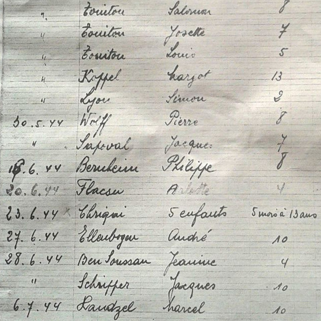

Portrait d’archive
René Simon Lyon
Simon René LYON
René LYON est né le 15/05/1942 à Mâcon en France.
Rassemblé à Lyon, il est déporté à Auschwitz le 30/06/1944 par le convoi n°76. Il est mort en déportation.
Dernière adresse connue : 9 rue Gambetta 71000 (Mâcon)
Nom : LYON
Prénom(s) : René Simon
Date naissance : 15/05/1942
Âge (ans) : 2
Lieu naissance : Mâcon
Pays ou département : Saone et Loire
Lieu rassemblement : Lyon
Dernière adresse : 9, rue Gambetta
Ville : Mâcon
Code postal : 71000
N° Convoi : 76
Date déportation : 30/06/1944
Informations diverses : Fils de Joseph Lyon (28/05/1905 à Insming 57) et de Roza née Gerst (07/05/1914 à Hambourg), mariés le 24/06/1937 à Strasbourg. Ils étaient réfugiés du Luxembourg au 12, Rue Dambey à Mâcon. La famille était pratiquante et le grand-père de Simon, Benjamin Lyon (né le 20/11/1876 à Hayange) était chantre et abatteur rituel de la communauté de Macon où il habitait au domicile de son fils. Le père Joseph, commerçant aisé, avait quitté son domicile fin mai 1944 et était caché chez des amis. Ils sont arrêtés le 24/05/1944. Cahier de Madame Cahen de l’Hôpital de l' Antiquaille, Lyon 24/05/1944. Déporté avec sa mère Rosa Lyon née Gerst (07/03/1914, Hambourg) et son grand-père Benjamin Lyon, à Auschwitz par le convoi 76. Sa sœur Sophia Lyon épouse Ben Oliel, témoignera dans une fiche YVS.
Lyon (Simon, René), né le 15 mai 1942 à Mâcon (Saône-et-Loire), décédé le 5 juillet 1944 à Auschwitz-Birkenau (Pologne). JO
Lyon, née Gerst (Rosa) le 7 mai 1914 à Hombourg (Allemagne), décédée le 5 juillet 1944 à Auschwitz (Pologne). Lyon (Benjamin), né le 20 novembre 1876 à Hayange (Moselle), décédé le 5 juillet 1944 à Auschwitz-Birkenau (Pologne).
Lieu de déportation : Auschwitz
Lieu de départ : Drancy
Nombre total de déporté·e·s du convoi : 1100
Gazé·e·s à l'arrivée : 479 (43,5 %)
Survivant·e·s en 1945 : 182 (16,5 %)